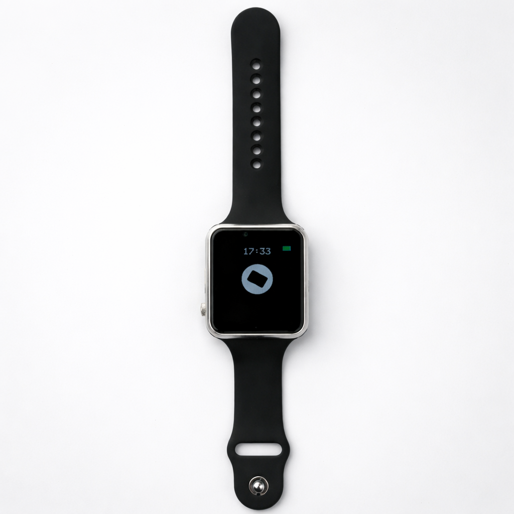

Hollow Zero.
Across your app, watch, Telegram, and Mac.
Talk or type once, then keep the same thread across surfaces.
Connect real tools through account-owned connectors
instead of juggling separate assistants.

Stop context-switching for every tiny task
Most assistants still live in one app, one chat, or one device. Hollow Zero is built to keep the same conversation moving across the surfaces you already use every day.
What You Can Do
Chat Anywhere
Talk or type in the app, continue on the watch, and pick the thread back up later without starting over.
Move Across Surfaces
Use Hollow Zero across iPhone, watch, Telegram, and Mac with one shared conversation state.
Connect Real Tools
Install connectors and link your own accounts so Hollow can work with real APIs without developers subsidizing usage.
Stay In Flow
Capture, ask, and follow up faster without bouncing between apps, tabs, and devices.
What early access is focused on.
In the rollout
Featured On

Why Hollow?
Most assistants are still fragmented. Hollow Zero is trying to make one assistant feel continuous, portable, and actually useful across the surfaces people already live in.
Single-App Assistants
- Useful, but trapped in one app or tab
- Conversations do not naturally follow you across surfaces
- Tooling is usually hidden behind one platform's workflow
- Easy to lose context when you switch devices
Device-Only Wearables
- Usually too narrow to act like a real assistant
- Often weak at continuity with phone and desktop workflows
- Limited tool access and shallow integrations
- Feels like a sidecar, not the same assistant everywhere
Hollow Zero
- One assistant, multiple surfaces instead of separate product silos
- Shared conversations across app, watch, Telegram, and Mac
- Connectors are moving toward user-owned account connections
- Built for early access feedback before a broader launch
One assistant. Multiple surfaces. One shared thread.
The watch still matters, but it is part of a broader Hollow Zero system now.
See The Loop
A quick look at Hollow in motion while the broader Hollow Zero rollout comes together.
Watch The Demo
A preview of the assistant experience while early access opens in stages.
Platform Snapshot
What the current Hollow Zero announcement is actually about
View Early Access Scope
Surfaces
- iPhone App: Chat-first mobile experience
- Watch: Companion surface with shared context
- Telegram: Continue the same assistant thread
- Mac: Desktop continuity and delivery
Connections
- Connectors: Installable API integrations
- Auth Direction: User-owned account connections
- Current Seed: A no-key Wikipedia connector
- Developer Access: Private while the platform hardens
Experience
- Focus: Faster capture and less context switching
- Design Goal: One thread across surfaces
- Rollout: Early access before broader launch
Trust
- Waitlist: Rolling access instead of open floodgates
- Privacy: Clearer account-connection model
- Support: Early access support and FAQ are live
About Us
Hollow started with a simple frustration: why does every assistant still feel trapped inside one device or app?
Hollow Zero is the direction: one assistant that can follow you across mobile, watch, Telegram, and desktop instead of forcing you to restart the interaction every time your context changes.
The watch still matters, but it is no longer the whole story. Early access is about shaping the broader system, the connector layer, and the handoff between surfaces before a wider release.
Join
Early Access.
Hollow Zero is opening in stages. Join the list for rollout updates, product access, and connector news.